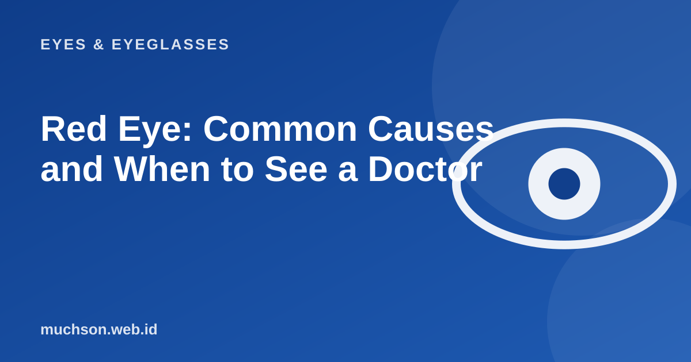

Home › Articles › Eyes & Eyeglasses
Eyes & EyeglassesRed Eye: Common Causes and When to See a Doctor
Red eyes are very common. Most are mild and clear up on their own, but some are linked to serious conditions. The key is recognising the signs that come with it.

Common causes
| Cause | Typical features | Notes |
|---|---|---|
| Dry or irritated eyes | Stinging, gritty feeling, worse with screens or air conditioning | Improves with rest and good habits |
| Allergy | Itching, watering, both eyes, sometimes sneezing | Avoid triggers, do not rub |
| Viral conjunctivitis | Watery, thin discharge, often spreads to the other eye | Contagious: wash hands, do not share towels |
| Bacterial conjunctivitis | Thick, yellowish discharge | Needs assessment by a healthcare provider |
| Subconjunctival haemorrhage | A bright red patch on the white of the eye, no pain | Usually clears on its own, but get checked if it recurs |
| Contact lens problem | Pain, glare, blurriness | Take the lenses out and get checked right away |
Safe first aid
- Wash your hands before and after touching the eye area.
- Do not rub your eyes.
- Take out contact lenses until your eyes are healthy.
- Use a cold compress for allergies and a warm compress for crusted eyelids.
- Use artificial tears if your eyes are dry.
- Do not share towels, pillows or eye make-up.
Be careful
Do not use leftover eye drops or someone else's, and avoid drops containing steroids without a prescription. The wrong medicine can make some infections worse.
Signs to see a doctor right away
Do not delay
A red eye with severe pain, reduced vision or strong glare is not minor. Seek medical help right away.
FAQ
Is a red eye always contagious?
No. Red eyes caused by allergies or dry eyes are not contagious. Viral or bacterial conjunctivitis can be.
Can I go to work or school with a red eye?
If an infection is suspected, it is best to rest and keep clean. Follow your healthcare provider's advice.
How long does a mild red eye take to clear?
Mild irritation often improves within a day or two. If it does not improve or gets worse, get it checked.